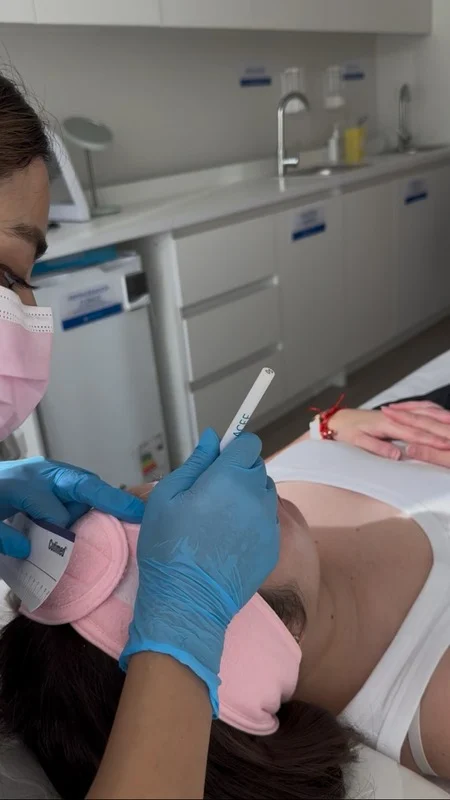

CLINYCARE
Tu camino hacia una piel sana comienza aquí.
Prevenimos, revitalizamos y regeneramos la salud de tu piel mediante tratamientos personalizados, tecnología y atención basada en evidencia científica.

Cuidamos de tu piel con experiencia, evidencia y cercanía.
En CLINYCARE creemos que cada paciente merece una atención personalizada, basada en evidencia científica y entregada con empatía.
Nuestro compromiso es acompañarte en cada etapa del tratamiento, desde la prevención hasta la regeneración, ofreciéndote un espacio seguro donde tu salud y bienestar son nuestra prioridad.
Nuestras áreas de especialización
| PREVENCIÓN | REVITALIZACIÓN | REGENERACIÓN |
|---|---|---|
| Protegemos hoy la salud de tu piel para prevenir problemas futuros. | Recuperamos la luminosidad,firmeza y vitalidad natural de tu piel. | Tratamientos especializados para favorecer la reparación y regeneración de la piel. |
|
 |

|

|
¿Por qué las personas nos prefieren?
| Icono 1 | Icono 2 | Icono 3 | Icono 4 | Icono 5 | Icono 6 |
|---|---|---|---|---|---|
| Plan personalizado | Seguimiento continuo | Educación y autocuidado | Trabajo en equipo | Tratamientos basados en evidencia | Seguridad y calidad clínica |
| Cada tratamiento se adapta a tus necesidades. | Acompañamos tu evolución en cada etapa. | Te entregamos herramientas para cuidar tu piel en casa. | Derivación y coordinación médica cuando es necesario. | Utilizamos tecnologías y apósitos de acuerdo con las necesidades de cada paciente. | Protocolos estandarizados, procedimientos seguros y atención centrada en el paciente. |
Conoce a quienes cuidarán de ti

|

|
|---|---|
| Dr. Juan José Araya C. | EU. Carolina Quinteros C. |
|
|
Comentarios de nuestros clientes
| Patricio O. - Opinión verificada | Constanza Pérez. - Opinión verificada | Janett Requena. - Opinión verificada |
|---|---|---|
| Excelente profesional, dedicada, amable y atenta, además te hace sentir muy cómodo por su calidez en el el trato, en un lugar impecable y confortable. 100% Recomendable. | Llevamos a mi abuelita por una herida en su pierna que no sanaba y desde el primer momento Caro nos dio mucha confianza, muy amable, respetuosa y profesional, siempre nos explicó todo, contaba con variedad de apositos avanzados, además su consulta siempre estaba impecable y al ser por hora, nunca tuvimos que esperar. Mi abuelita se sintió muy acogida, escuchada y lo mejor es que el tratamiento fue efectivo, se fue de alta sin molestias, muy feliz y con su pierna sana. Estamos muy agradecidas de haber llegado a su consulta y la recomendamos a ojos cerrados. | Excelente, una enfermera demasiado amable, comprensiva, atenta, empática. Estuve varios meses atendiendome con ella y su forma de trabajar es impecable, una gran profesional. |
| Imagen 5 Estrellas | Imagen 5 Estrellas | Imagen 5 Estrellas |